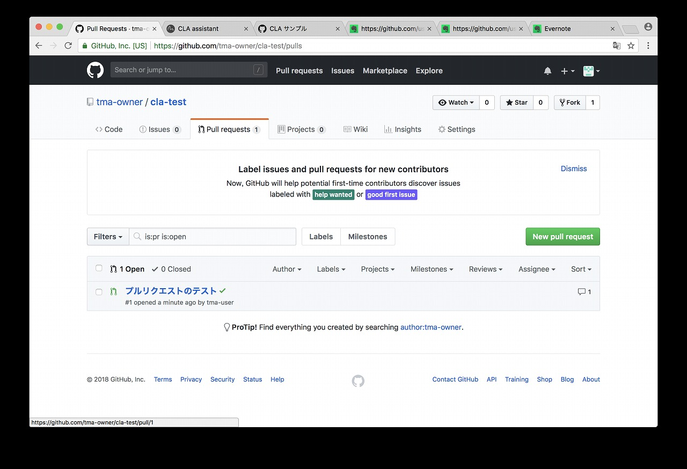

$Date: 2018-07-07 06:49:13 +0900 (2018/07/07 (土)) $
$Revision: 1347 $
cla-assistant 使い方
概略
オープンソースソフトウェアにおいて、いろんな人の貢献を受け入れるにあたって
作成した頂いたソースの扱いを明確にするために
事前に google のリポジトリ では
最初の Pull Request を送ったときに Google の CLA に署名することを求められます。
GitHub で公開しているオープンソースのリポジトリに対して GitHub と連携して
CLA に署名してもらう手段として cla-assistant が
提供されています。
このページでは cla-assistant の使い方を説明します。
手順の概略
リポジトリのオーナー側の手順
- CLA を採用するリポジトリ側のアカウントを準備する
- CLA を採用するリポジトリを作成する
- cla-assistant を有効にする
リポジトリにPull Request を送る側の手順
- Pull Request を送るユーザーのアカウントを準備する
- CLA を採用するリポジトリを作成する
- cla-assistant を有効にする
手順
リポジトリのオーナー側の手順
リポジトリのオーナー側のアカウント作成
-
https://github.com にアクセスする。
-
使用したいアカウント名、メールアドレス、パスワードを入力して "Sign up for GitHub" を選ぶ
-
オープンソース用に使用する場合、そのまま Continue をクリックする
-
スクロールして Continue をクリックする
-
指定したメールアドレス確認メールが来るので、メールのリンクをクリックする。
-
以下の画面になる
リポジトリの作成
-
ファイルの追加
-
git コマンドで clone してファイルを追加する。
-
以下の画面になる。

cla-assistant の設定
-
https://cla-assistant.io にアクセスする。
"Sign in with GitHub" をクリックする。
-
GitHub に対して CLA assistant からアクセスする権限を付与するか確認画面が出る
CLA assistant に権限を与える場合、"Authorize cla-assistant" をクリックする
-
もう一度、権限を与えるか確認画面が出る。
画面をスクロールする。
-
CLA assistant に権限を与える場合、"Authorize cla-assistant" をクリックする

-
CLA の設定画面になる
Configure CLA を選ぶ
-
CLA を設定する対象リポジトリと CLA を設定する
既存の CLA と独自のものを選べる
ここでは "don't have one" のリンクを選ぶ
-
"gist.github.com" のリンクを選ぶ
-
"gist.github.com" のファイルを入力する画面になる
-
CLA に使うテキストを入力する
"create public gist" を選ぶ

-
以下の画面になる
-
"Paste a URL from a Gist" に作成した Gist の URL を貼り付ける
-
"LINK" を選択する
-
"Yes, let's do this" を選択する
-
"Great, thanks!" を選択する

-
CLA が登録されたことを確認できる
-
"Setting" 画面で Webhooks に cla assistant が追加されていることを確認できる
リポジトリにPull Request を送る側の手順
Pull Request を送る側のアカウント作成
-
-
-
-
-

Pull Request を送るための準備
-
Pull Request を送りたいリポジトリにアクセスする
Fork ボタンを押す
-
Fork 中に以下の画面になる
-
Pull Request を行うための作業ブランチを作る
"Branch: master" のところをクリックして、ブランチ名を入力する。
"Create branch: ～" のところをクリックして、ブランチを作成する
-
"test.txt" をクリックすると以下の画面になる
鉛筆ボタンをクリックしてファイルの編集を行う
-
スクロールして、"commit directly to the ... branch." にチェックが入っている状態で "Commit changes" を選ぶ
-
以下の画面になる。
Pull Request を送る手順 (CLA への署名含む)
-
"Compare & pull request" を選ぶ

-
"pull request の説明の入力画面になる
"create pull request を選ぶ
-
"pull request が作成される
-
少し待つと以下の画面になり、CLA に署名されていないという表示が出る。
"CLA not signed yet" のバッチをクリックする。
-
以下の画面が表示される。
CLA に同意できるなら "Sign in with GitHub to agree" をクリックして署名する
-
CLA assistant に権限を与えるか確認する画面が表示される
CLA assistant に権限を与える場合、"Authorize cla-assistant" をクリックする
-
CLA assistant の処理画面が表示される
-
"CLA signed" のバッチが表示されて、署名できたことが確認できる
リポジトリのオーナー側の手順
-
リポジトリのページにアクセスすると "Pull requests" で 1 となっており
オープンしている "pull request" があるこを確認できる。
-
"Pull requests" を選ぶと以下の画面になる

-
Pull request を選ぶ
-
以下の画面になる。
"CLA signed" のバッチが表示されていることを確認できる
"Confirm merge" を選択する
-
以下の画面になる。
リポジトリにPull Request を送った側の手順
-
pull request がマージされたのを確認できる
"Delete branch" を選択してマージ済みの branch を削除する
-
"マージ済みの branch が削除されたのを確認できる